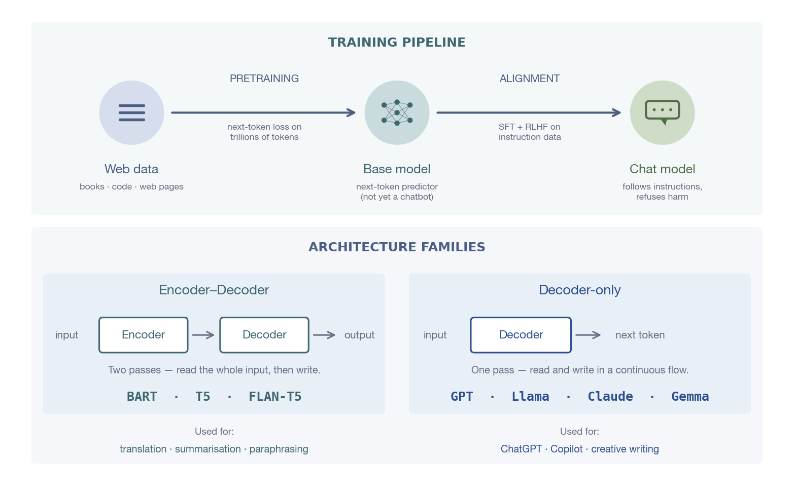
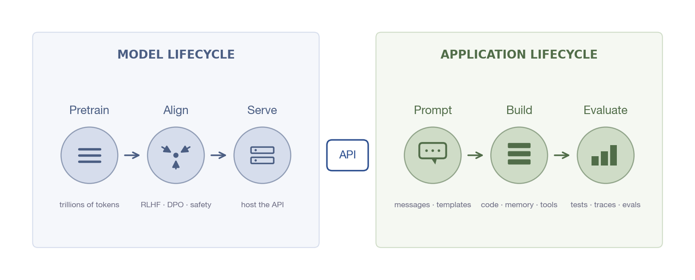
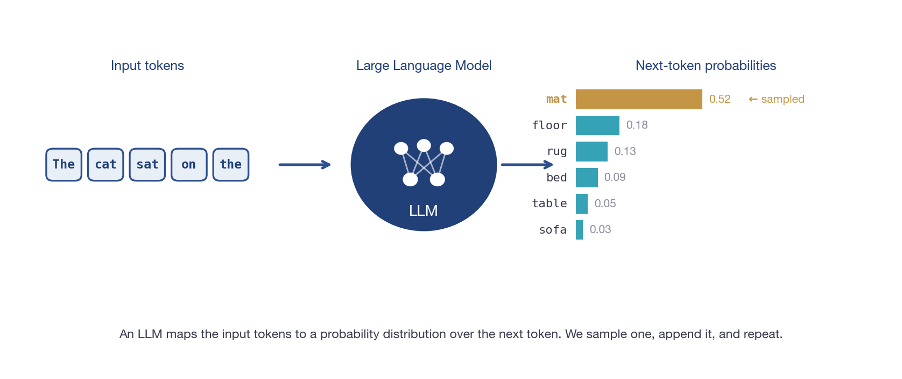
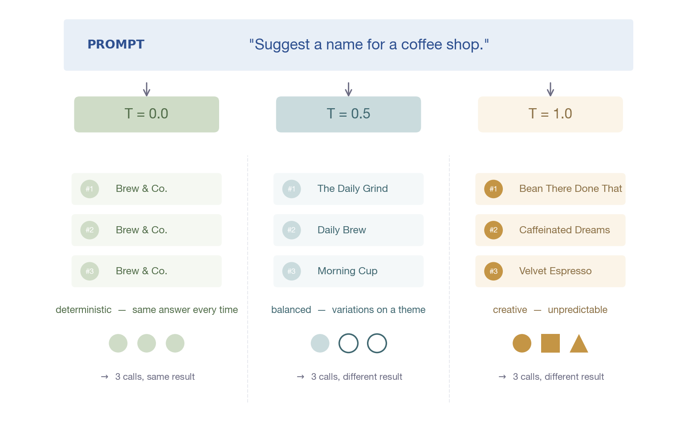

LLM Fundamentals
Stateless calls, stateful chats, and the loop that powers every LLM app
How an LLM is made
A quick anchor before we start using LLMs. Modern chat models come out of a multi-stage training pipeline, and they fall into two architecture families. We won't go deep — just enough perspective on the thing your app is calling.

Modern chat models are decoder-only. The training stages happen inside model labs — you call the finished model through an API.
From model to product
The model has its own lifecycle, and the app you build on top of it has its own. They meet at the API — the only contract that crosses between them.

Everything to the right of the API is application engineering. The left side is its own engineering discipline that lives in model labs and infrastructure teams.
What an LLM actually does
Strip away the hype: an LLM is a learned function that turns a token sequence into a probability distribution over the next token. We sample one token, append it, and repeat.

What this gives us
Explanation, classification, extraction, summarisation, code assistance — anything you can frame as "continue this text".
What it does not give us
Persistent memory, real-time facts, or tool use. Those are app-level features — the model itself just predicts the next token.
Tokens
Before the model reads your prompt, a tokenizer chops it into tokens. There are two flavours to know about — modern LLMs use the second one.
"GenAI engineers build LLM applications."
character-level tokenization▾
GenAI
·
engineers
·
build
·
LLM
·
applications
.
subword-level tokenization · what modern LLMs use▾
Gen
AI
engineers
build
LL
M
applications
.
40 character-tokens
→
8 subword-tokens
WHY THIS MATTERS
Token count decides whether a prompt
fits the model's context window — and what each call costs in money and latency. Subword tokenization (BPE, WordPiece, SentencePiece) is the standard because it gives a good balance: common words stay one token, rare words split into a few pieces.
The context window is a budget
A model can only see a fixed number of tokens per call — its context window. System prompt, history, retrieval, tool results, and your new user message all share that budget.
0 tokens
8 192-token limit →
system
chat history
retrieved context
tools
user msg
unused — headroom for the reply
system ~820 t
history ~1 800 t
retrieved ~1 800 t
tools ~480 t
user msg ~640 t
used: ~5 540 tokens of input
limit: 8 192 tokens (model-specific)
THE MODEL HAS NO MEMORY
If you don't put it in this bar, the model doesn't know it. Forgetting this rule is the #1 source of "why doesn't it remember what I just said?" bugs.
The chat-completion message format
Every chat completion request is a list of role-tagged messages. Each role tells the model how to treat that turn — get the roles wrong and the model behaves wrong, even with identical words.
messages = [
{"role": "system", "content": "You are a careful SQL reviewer. Reply in JSON."},
{"role": "user", "content": "Find customers who churned last month."},
{"role": "assistant", "content": "SELECT * FROM customers WHERE churned_at > '2026-04-01'"},
{"role": "tool", "content": '{"rows": 42, "error": null}'},
{"role": "user", "content": "Looks right. Now format the result as JSON."},
]
system · user
system sets persona, tone, output format — the job description for this whole conversation. user is the actual request the model should respond to.
assistant · tool
assistant is what the model said in a prior turn, sent back so it remembers. tool carries the result of a function the model asked you to run.
Pattern 1 — Stateless call
The simplest LLM pattern: one prompt in, one answer out. No history. Fast, cheap, predictable — and good for surprisingly many real tasks.
Request
[
{"role": "user",
"content": "Classify: 'My package never arrived'"}
]
When stateless is the right pattern
| Use case | Concrete example |
|---|
| Classification | Tag a support ticket as billing / bug / sales / shipping. |
| Extraction | Pull a date, amount, and vendor from a free-text invoice. |
| Summarisation | Compress a 30-minute meeting transcript into five bullets. |
| One-off Q&A | "What does this error message mean?" — no follow-up needed. |
Pattern 2 — Stateful chatbot
A chatbot is just a stateless call repeated in a loop. You store messages on the app side, then resend the relevant ones every turn.
def chat(user_msg):
history.append({"role": "user", "content": user_msg})
reply = llm.complete(messages=history)
history.append({"role": "assistant", "content": reply})
return reply
The illusion of memory comes from your app, not the model. The model is still stateless — it just gets fed more context each turn.
Memory strategies
Sending every message back forever is expensive and eventually breaks the context window. Real chatbots trim, summarise, or offload. Pick a strategy based on how much continuity you need.
| Strategy | What it does | Best for |
|---|
| Full history | Resend everything every turn. | Short demos, evaluation runs. |
| Last-N messages | Keep system + most recent N turns (plus an anchor). | Most production chatbots. |
| Summary + recent | Compress old turns; keep latest few raw. | Long sessions, coaching bots. |
| External memory | Store facts in a DB; retrieve on demand. | Personal assistants across sessions. |
THE TRADEOFF
More history → better continuity, higher token cost. Less history → cheaper, but you may lose what the user said three turns ago. There is no free option — pick the smallest window that keeps the bot coherent for your use case.
Temperature reshapes the next-token distribution
Temperature scales the model's logits before sampling. Low sharpens the distribution onto the most likely token; high flattens it so other tokens get a real chance.

Low temperature (0.0–0.2)
Almost deterministic. Use for: JSON extraction, classification, SQL, math. Anything where you want the same answer twice.
High temperature (0.7–1.0)
Genuinely varied. Use for: brainstorming, creative writing, idea generation. Expect different answers each call.
Other generation parameters
Temperature is the famous one. These three round out the toolkit and matter as soon as you build real apps.
| Parameter | What it controls | When to tune it |
|---|
| max_tokens | Hard ceiling on the reply length. | Cap cost; force concise answers; prevent runaway generation. |
| top_p | Nucleus sampling — only consider tokens in the top p probability mass. | Alternative to temperature. Use one or the other, not both. |
| stop | List of strings that abort generation when produced. | End at "\nUser:" in agentic loops, or at "```" in code blocks. |
SAFE DEFAULT PROFILE
temperature=0.2,
max_tokens=600, no
top_p override,
stop=None. Predictable, bounded, easy to reason about.
Prompt engineering
A weak prompt and a strong prompt feed the same model — the strong one gets dramatically better answers because it removes ambiguity.
Weak prompt
Explain retrieval-augmented generation.
The model has to guess: who's the audience? how long? bullets or prose? with code? It picks something average and you're disappointed.
Strong prompt
Explain retrieval-augmented generation to a beginner. Use 5 bullet points. Give one example using a course document assistant. Avoid advanced math.
Six new constraints: audience, format, length, example domain, scope limit. The model has almost no room to pick wrong.
The 6 levers
Role · Task · Constraints · Output format · Examples · Context. If a prompt is underperforming, check which lever you forgot to pull.
Prompt templates
Hardcoded prompt strings are unmaintainable. A template separates the reusable structure from the per-request variables, the same way SQL parameters separate query shape from data.
TUTOR_TEMPLATE = """You are a {role}.
Explain {topic} for a {level} learner.
Use {n_bullets} bullet points. Avoid jargon."""
def build_tutor_prompt(topic, level):
return TUTOR_TEMPLATE.format(
role="patient Python tutor",
topic=topic,
level=level,
n_bullets=5,
)
When you change the wording, you change it in one place. When you A/B test prompts, you swap one constant. Templates become the basis for evaluation — same structure, varied inputs.
Structured output
Free-text replies are great for humans, useless for the next program in the pipeline. When the consumer is code, ask for JSON and validate it.
What the model returns
{
"intent": "explain_concept",
"topic": "tokens",
"difficulty": "beginner"
}
What the app does next
import json
try:
data = json.loads(reply)
except ValueError:
...
DESIGN FOR PARSE FAILURES
Even with
temperature=0, the model occasionally returns prose around the JSON, or invalid JSON. Always wrap
json.loads() in a
try and have a fallback — a single retry usually fixes it.
Common failure modes
Almost every "the LLM is broken" report traces back to one of these six patterns. Recognising the symptom is half the debugging.
?!
Generic, off-target answer
causeVague prompt — the model is guessing the audience and format.
fixPull more of the six levers: role, constraints, output format, an example.
{ }
JSON fails to parse
causeTemperature too high, or the prompt didn't show a JSON example.
fixDrop temperature to 0. Include a one-line valid JSON example in the system prompt.
⚠
Confident wrong facts
causeHallucination — the model is filling gaps from its training distribution.
fixGround the answer in retrieved data instead of relying on the model's memory.
$$
Slow or costly responses
causeSending too much context — long history, oversized retrieved passages.
fixTrim history with last-N; retrieve fewer, more relevant passages.
↩
Loses earlier context
causeHistory exceeded the context window, or was trimmed too aggressively.
fixSwitch to summary memory or always keep an anchor (first user message).
≠
Style drifts across calls
causeDifferent code paths each send a slightly different system prompt.
fixCentralise prompts in prompts.py; use templates, not inline strings.
What you'll build today
Six runnable modes — each maps to one concept from this deck. Together they form a CLI that demonstrates every fundamental covered here.
--mode statelessStateless prompt
One prompt, one answer. The single-call pattern in code.
--mode chatStateful chatbot
REPL with last-N memory, prints per-turn token cost.
--mode temperature-demoTemperature experiment
Same prompt at 0.0, 0.5, 0.9 — watch variance climb.
--mode prompt-compareSystem vs user prompt
One user message, two different system prompts.
--mode structured-outputStructured JSON
Returns a parseable dict, validated on the way out.
--mode tokensToken growth demo
Full-history vs last-N tokens over 6 turns.
Recap & resources
You now have the mental model every other class builds on. Take 20 minutes with one of these resources before next session — pick the one that fills your weakest spot.
What you learned
Messages, not strings
Chat models read role-tagged message lists.
Stateless underneath
Memory is your app's job, not the model's.
Tokens = budget
Every prompt fights for context-window space.
Temperature = stability
Low for JSON and facts; high for ideation.
Templates over strings
Separate prompt structure from per-call variables.
JSON for code consumers
Always validate; design for parse failures.
Curated resources